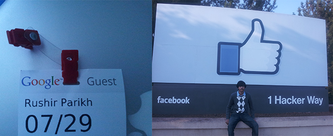

Everyone wants to leave a positive impact on society, but few have experienced the satisfaction of creating something from scratch and having that product help hundreds of people. Although Clerk was never put out into the open, the idea reached hundreds of people who suggested improvements, features, and thanked me for creating it. Clerk was a vision for an easier future for bloggers where they wouldn’t worry about where their next paycheck would come from. Clerk was just the beginning. For me, building something isn’t just creating without purpose: it requires vision and planning. My vision is to lead the future intersection between global cultures and technology.
My story is simple. Growing up without access to experts or creation studios has forced me to become my own expert and to seek out those things myself. I have identified the important goals in my life, such as creating a successful startup that I am actively pursuing, and with my persistence, I know that I will succeed.
Simply trying your hardest is not enough. We all come from different backgrounds, different hardships, different stories. You must have others on your side to truly succeed. Your life dreams cannot be accomplished by yourself. I’m telling you that you need to find someone who inspires you. Find someone who’s lead you can follow you. Who you can look up to. Someone you can ask for guidance. But don’t follow this person to the ends of the earth. You also need a strong mind, a sense of direction of where you want to be, set goals, have a plan. Having a mentor is not restricted to just technology related jobs and goals… If you want to be a chef, find a Michelin Starred restaurant’s chef to learn from. If you want to become a awesome physics teacher, Walter Lewin (from “For the Love of Physics”, MIT lecture) would be a good person to look up to. Finding someone to guide you will allow you to quite literally enact change on the world. You’ll start enjoying life more. As you struggle through life, you’ll relish in the struggle, each day becomes a mission, with a purpose. When this happens you know you’re on your “grind”. It feels akin to putting in a song like “Last Breath” by Future and just typing away your thoughts as fast as your fingers allow you. There’s a certain rush you feel as you live life. So the moral of this story? You can’t do it alone, you’ll break yourself trying. Find someone to help guide you, who you can turn to when you’re struggling to keep providing the little motivation you need to keep moving forward with your dreams, the way I did. I haven’t even started what I was meant to do, but we all have to start somewhere. But at least I’ve started. Clerk was just the beginning of what I’m wanting to do with my life. Find someone to take you where you know you belong.

A visitor badge for when I toured Google and sitting in front of Facebook's Campus Logo
So what? I want to be a leader in technological entrepreneurship. I want to make technology easier to use and easier to access. These are things that require hardwork and dedication, but most of all they require support from others. To college and high school students who are trying to think about how they can fit in their passions with their schoolwork, you can, you just need to set a plan and know that you can accomplish your dreams, but you just need a little help from someone. Go find that someone.
My newest mentor who helps me with business ideas, Pascal Finette, Director of Mozilla Foundation, and I.